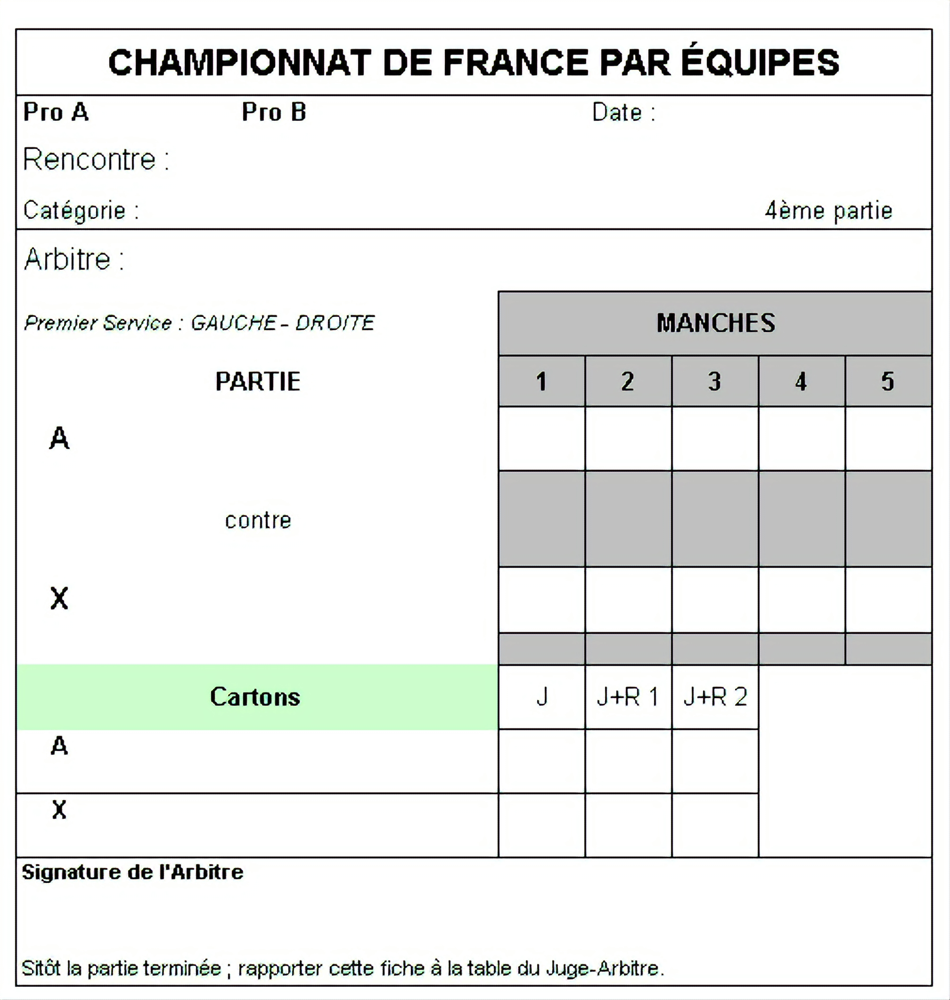

Le match est découpé en set, dont le but est soit, d'atteindre 11 points, soit avoir 2 points d'écarts avec son adversaire dans le cas où un score de 10-10 est atteint.
Avec cette seconde règle, il est possible d'atteindre des manches à plus de 15 points (le plus long set que j'ai réalisé est une victoire 20-18).
Un match officiel se déroule en 3 sets gagnants, qu'il soit en simple ou en double.
Pour garrantir le bon déroulement d'un match, plusieurs règles sont présentes :
Chaque point commence par un service :
Il faut commencer par présenter la balle dans sa paume de main ouverte, le tout plus haut que le plateau de la table.
Ensuite, il faut lancer la balle à la verticale d'une hauteur minimale de 16 cm, et la toucher dans sa phase déscendante.
Pour terminer, il n'est pas autorisé de toucher sa balle au service au dessus de la table.
Si le service touche le filet, il est considéré comme "let", et est à refaire (sans aucune pénalité).
Une fois le service effectué, il n'est plus autorisé de toucher la table avec son corp, sauf le bras qui tient la raquette et le bassin.
En cas de touche du filet ou d'un bord de table lors d'un échange, aucune pénalité n'est appliquée, mais il est préférable de s'excuser par respect.
Il n'est pas autorisé de parler pendant les points.
Toute la raquette peut remettre la balle sur la table, ainsi que la main qui tient la raquette.
Il n'est pas autorisé de toucher deux fois la balle, que ce soit en simple ou en double.
Aucun joueur n'a le droit de tenir de seconde balle pendant un point.
si le match est un double, il est obligatoire de servir dans la diagonale droite de la table.
Si le match se déroule en double, l'arbitre doit arbitrer debout, afin de voire plus facilement les fautes de service.
Tous les 6 points, les joueurs peuvent prendre une courte pose afin de boire et s'essuyer avec leur serviette, sans aucun contact avec leur coach.
Chaque joueur dispose d'un temps mort d'une minute qu'il peut utiliser ou non. Le joueur décide si il veut l'arrêter avant la fin en disant "reprise", obligeant le joueur adverse à reprendre la partie.
Lorsqu'un set est finit, il faut marquer le résultat sur la feuille de match.
Pour ce faire, il existe 2 méthodes, qui dépendent de la feuille d'arbitrage :
Si c'est une feuille de poule, il faut écrire le score le plus bas en fonction du joueur 1.
Si le joueur 1 gagne, on écrit "+ score", sinon on écrit "- score".
Comme visible sur la feuille de match ci-dessus, lors du premier match, PENNEC Olivier gagne face à DORGERE Rémi, et il nous est possible de deviner les scores.
Pour le premier set, il est gagné 11-8 par le joueur 1, le deuxème 11-5 et le troisième 11-4.
Dans le cas du second match, opposant FUCHS Gérard et FUCHS Yohann, FUCHS Gérard perd 8-11, 13-15 et 8-11.
Pour la feuille de match en simple, il suffit de marquer le score de chaque joueur dans chacun des sets, mais il faut entourer le score du vainqeur du set ainsi que le vainqueur du match, afin de faciliter le travail des juges arbitres.
Ces derniers s'occupent ensuite d'entrer le résultat du match sur l'application SPID, qui permet à la FFTT d'afficher les scores et de caculer les échanges de points.

Lorsqu'un tournoi ou une rencontre est terminée, il est possible de voir les résumés des matchs sur l'application FFTT ou sur le site de ping pocket.
Il nous permet aussi de calculer l'échange de points, qui varie selon le classement personnel et celui de l'adversaire.
Plus la différence est élevée, plus l'échange de point est important ou au contraire, bas.
Si le gagnant possède beaucoup plus de points que son adversaire, seul peut de points seront échangés, et inversement.
Il faut aussi prendre en compte le coefficient de la compétition : une victoire ou défaite lors d'un critérium fédéral est de coefficient 1.5, tandis que celui du championnat jeune est de 0.5.
Avec tous ces critères, il est possible au maximum de gagner 60 points en un seul match, si toutes les conditions sont réunies.
Pour donner une échelle sur les points au tennis de table, ces derniers sont comparable à l'Elo aux échecs.
Chaque joueur commence le tennis de table avec 500 points, et voit son classement évoluer tout les 10 du mois environ.
Pour accéder à mon classement, il vous faut aller dans joueur puis tappez mon numéro de license : 107711
Les joueurs sont aussi classés selon leur catégorie, comme visible sur le tableau ci-dessous: